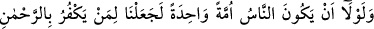

ise gayy, dalâlet, cehâlet, abâvet ve onları Allah’tan uzaklaştıran çok dünyalık
sözkonusudur. Onlar da bu hususlarda derece bakımından çeşit çeşittir. Netice itibariyle
Allah’a yönelenlerle Allah’a sırt çevirmiş olanların durumu, leziz nimetler yiyenlerle
zararlı haşereler yiyenler gibidir.
Bazıları şöyle demiştir: Allah Teâlâ, bu makam sâhiplerini nefsin hîlesini ve şeytanın
vesvesesini bilmeleri bakımından da farklı yapmıştır. Bu işi iyi bilen, daha az bilenden
üstündür. Bunun yolu da zikirdir.
Sehl şöyle demiştir: İhlasla olduğu zaman Allah’ı zikretmek bütün amellerden
üstündür.
Sülemî’nin Hakàik’inde şöyle gelmiştir: Derecelerdeki farklılık ahlâk güzelliğine
göredir. Kimin huyu daha güzelse derecesi de daha yüksek olur.
İyi işli güzel ahlâklı bir adam vardı,
Kötü yaratılışlı kimseler hakkında güzel konuşurdu.
Birisi onu öldükten sonra rüyasında gördü de
“Öldükten sonra başına neler geldi? Anlat!” dedi.
O kimse ağzını gül gibi tebessüm ederek açtı
Bülbül gibi hoş bir sesle anlatmaya başladı:
“Ben hayatta kimseye sıkıntı vermediğimden,
Kimse de bana burada bir sıkıntı ve rahatsızlık vermedi.
Filozoflar, bütün beşerî kemâlât ve olgunlukların istidâd ve kâbiliyet şartına bağlı
olduğunu söylemişlerdir. Oysa bu konuda doğru olan görüş şudur: Elbette nübüvvet,
velâyet, diğer saltanat, vezirlik ve buna benzer tüm makamlar tamamen Allah’ın lutuf ve
ihsânıdır. Kesbî değildir. Herhangi bir istidâd ve kâbiliyet şartına da bağlı değildir.
Zîrâ istidâd ve kâbiliyet de Allah’ın bir lutuf ve ihsânıdır. Bu konuda şöyle denilmiştir:
“Allah’ın vermesi konusunda kàbiliyet şart değildir. Belki kàbiliyet şartı da Hakk’ın
vergisidir.” Ancak bu güzelliğin şart ve sebepleri oluştukça peyderpey, yavaş yavaş
ortaya çıkması, işin perde arkasını göremeyen için bir vehim meydana
getirebilmektedir. Dolayısıyla kişi, sözkonusu durumun çalışmakla ve özel kâbiliyetle
elde edildiğini zannedebilmektedir. Halbuki gerçekte durum hiç de böyle değildir. İşte
Allah, gerçek velî ve dosttur. Kulların işlerini deruhte edip hikmeti gereği tasarruf eder.
Hiçbir şeyin Allah’ın tasarrufunda dahl ü tesiri yoktur. Allah Teâlâ’dan ekmel dostları
hürmetine bizleri de olgunluk derecelerine yücelttiği kullarından kılmasını diliyoruz.
33. Şâyet insanların küfürde birleşmiş bir tek ümmet olması (tehlikesi)